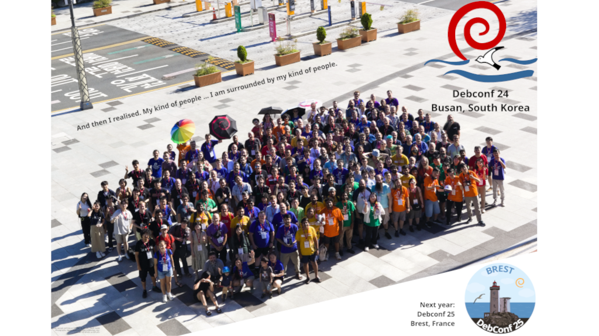

Bem-vindo ao Mundo Debian
Por que escolher Debian?
Estabilidade
Conhecido por sua excepcional estabilidade e confiabilidade.
Software Livre
Comprometido com os princípios do software livre.
Segurança
Atualizações de segurança rápidas e eficientes.
A comunidade
O Debian é uma comunidade de pessoas!

Equipe de desenvolvimento do Debian durante a DebConf 24